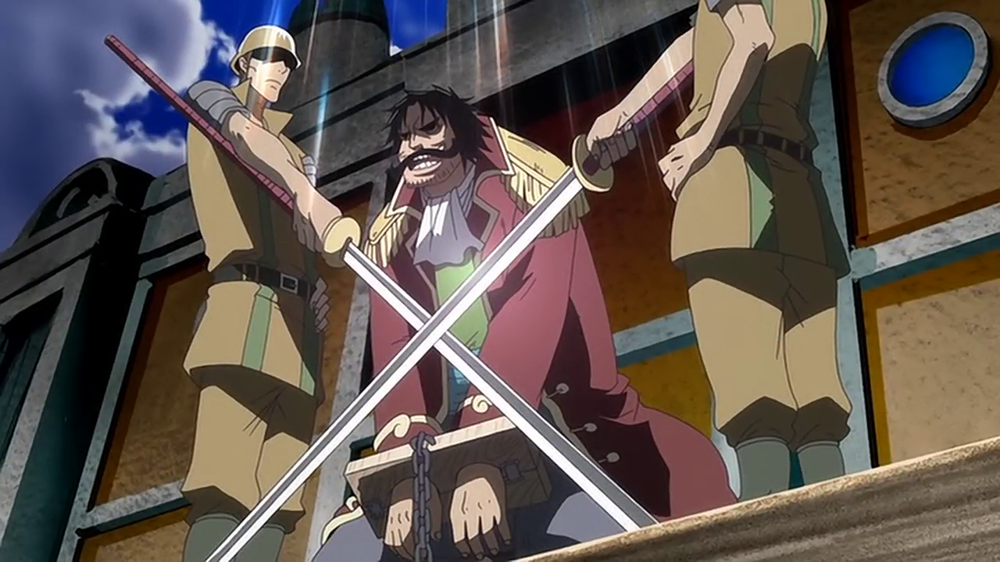
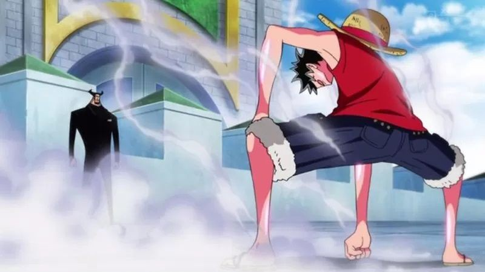
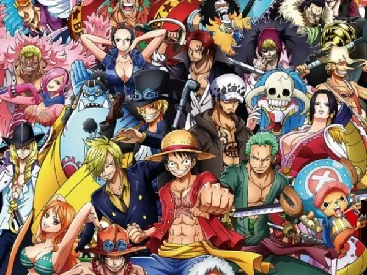

One Piece é uma série de anime e mangá criada por Eiichiro Oda. A história se passa em um mundo onde piratas buscam o lendário tesouro "One Piece", que dá ao seu possuidor o título de Rei dos Piratas. O protagonista é Monkey D. Luffy, um jovem pirata com o poder de esticar seu corpo como borracha, após comer a "Fruta do Diabo" Gomu Gomu no Mi.
Luffy sonha em encontrar o One Piece e se tornar o Rei dos Piratas. Ao longo de sua jornada, ele forma uma tripulação chamada de "Piratas do Chapéu de Palha", composta por personagens únicos, como Roronoa Zoro, um espadachim habilidoso; Nami, uma navegadora talentosa; Usopp, um atirador e mentiroso; Sanji, um cozinheiro e lutador; e outros que se juntam ao longo da série.

O mundo de One Piece é dividido em vários mares e ilhas, com o mais perigoso e misterioso sendo a Grand Line, onde Luffy e sua tripulação navegam em busca do One Piece. O governo mundial, os fuzileiros navais e outros piratas poderosos, como os Yonkou (Quatro Imperadores), são alguns dos principais obstáculos no caminho de Luffy. Além disso, a série explora temas como liberdade, amizade, justiça e os sonhos de cada personagem.
A história é cheia de batalhas épicas, mistérios sobre o mundo, e uma trama complexa que envolve não só a busca pelo tesouro, mas também a história de gerações passadas e o impacto de figuras como Gol D. Roger, o antigo Rei dos Piratas, que iniciou essa corrida em busca do One Piece.
